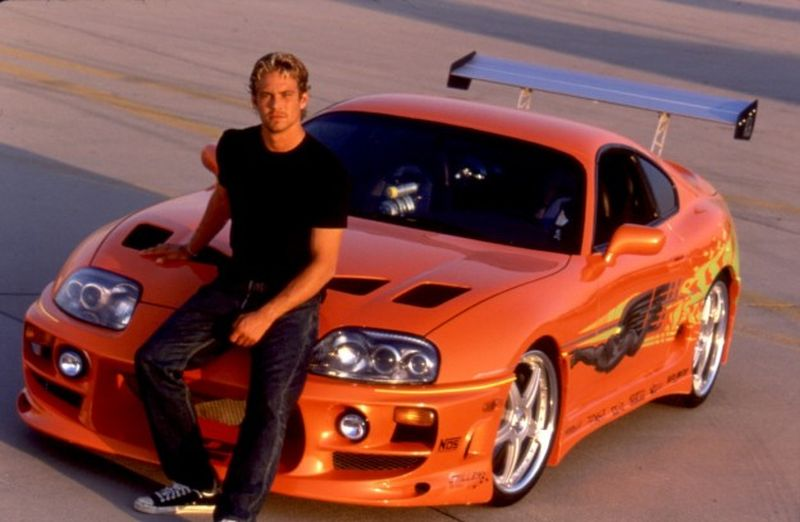

Unidos pela Velocidade
Conheça os Maiores do Racha de Rua
Os melhores personagens de Velozes e Furiosos que superam o que chamamos de adrenalina e causam o caos nas ruas dos EUA.
Aprenda Criando
Unidos pela Velocidade
Os melhores personagens de Velozes e Furiosos que superam o que chamamos de adrenalina e causam o caos nas ruas dos EUA.

Destaques
Conheça a história e a ficha técnica dos 12 principais corredores da saga.
Ver Galeria CompletaDescubra como os carros reais e cenas de ação foram filmados nos filmes.
Ver Curiosidades